Nightscout in DigitalOcean⌁
APPLIES TO:
The original documentation is here https://gist.github.com/DrCR77/eb08b830d4f31092cf65a8a9976dc0a6.
Cost
Nightscout and its database will fit in a Basic droplet at 6$ / month.
You can test this solution for free for 2 months.
Consider Nightscout as a service as an option.
WORK IN PROGRESS DO NOT USE YET
Step 1: Create a GitHub account⌁
If you already have a GitHub account, update your Nightscout project.
If you don't have a GitHub account create one then fork the Nightscout project and come back.
Step 2 - Create a Droplet⌁
a) Sign up at DigitalOcean and Sign up with GitHub.
b) Authorize DigitalOcean to access GitHub information.
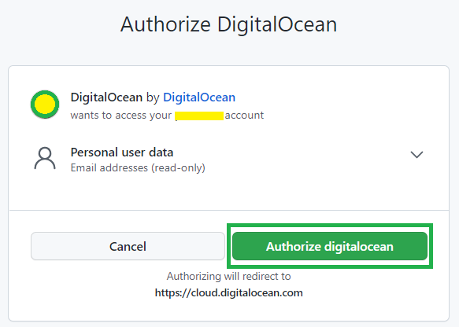
c) Select Deploy a virtual machine.
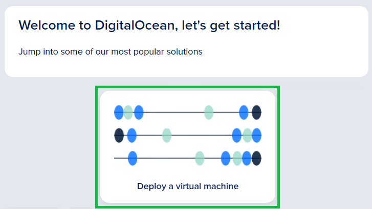
d) Select Ubuntu 20.04 (TLS) x64 using the drop down menu.
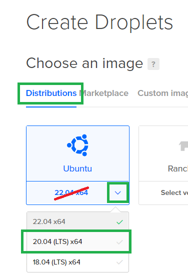
e) Select SHARED CPU Basic in Choose a plan.
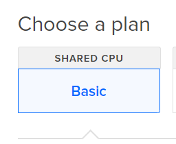
f) Change your Droplet plan to a $4 Droplet.
You can modify this later but you can't select anything cheaper than this first choice.
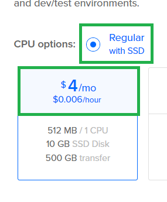
g) Choose a datacenter close to where you live.
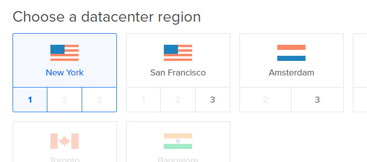
h) It is strongly recommended that you select SSH Key to have a secure login.
If you're not technical enough you will probably want to use a standard root password. If you decide to do so, make sure it's highly complex and change it regularly to avoid your site being hacked.
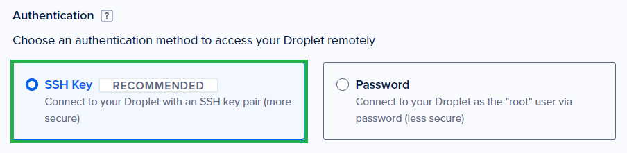
g) Scroll down and click Create.
Wait until your droplet finishes initialization.
h) You need to confirm your identity with a credit card or with PayPal.
If you selected a credit card, 5$ will be booked on it: not withdrawn.
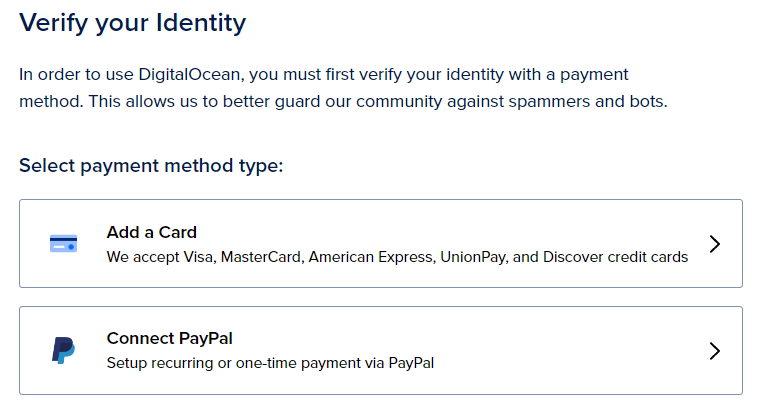
You now have 100$ to spend for free for the next 60 days.
Step 3 - Install MongoDB⌁
a) Select twice your new droplet to open the view you see below, in Access, select Launch Droplet Console.
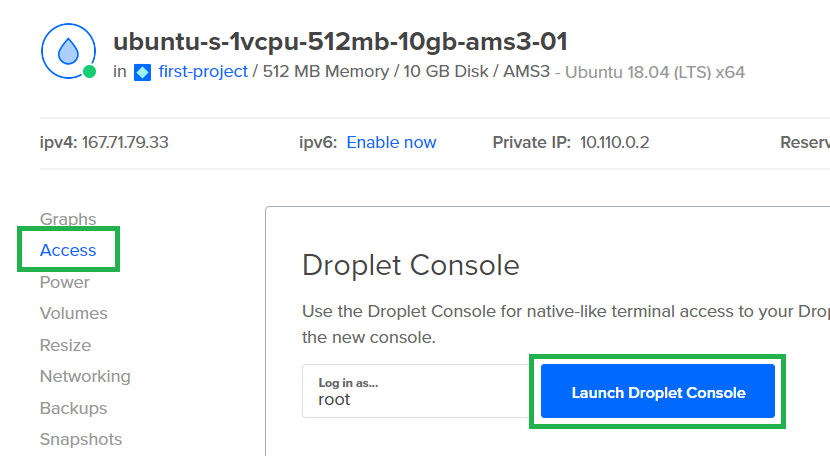
A terminal window will open.
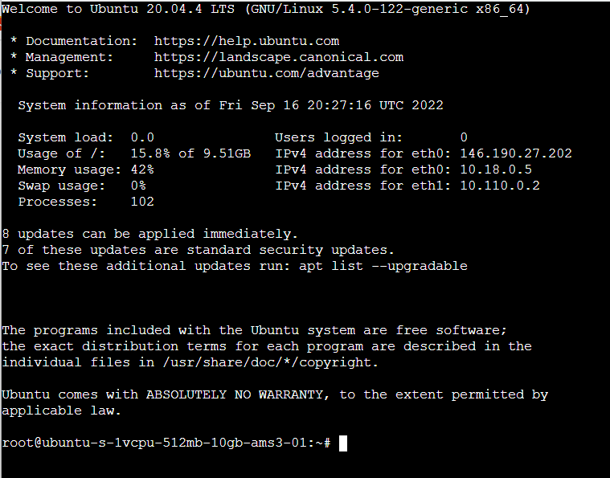
b) Update your Ubuntu system (this is a command you should type every 3 or 6 months to keep it updated).
Enter the following command:
sudo apt-get update && apt-get upgrade -y
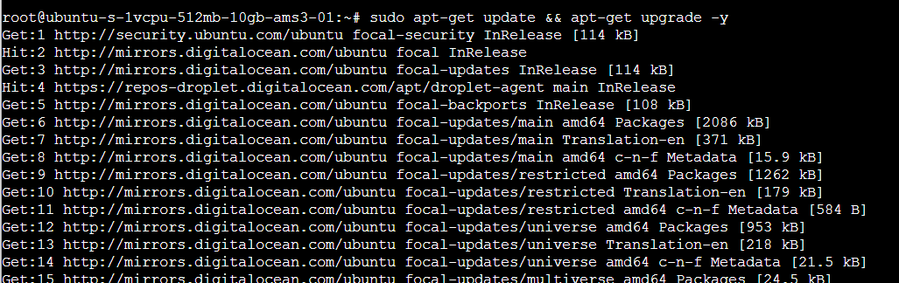
You will see it's completed when the terminal stops scrolling text and you're returned to the prompt. Something like this:
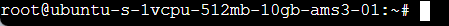
c) Install MongoDB entering the following command:
sudo apt install mongodb -y
Wait until it completes.
d) Enter in Mongo shell with the following command:
mongo --port 27017
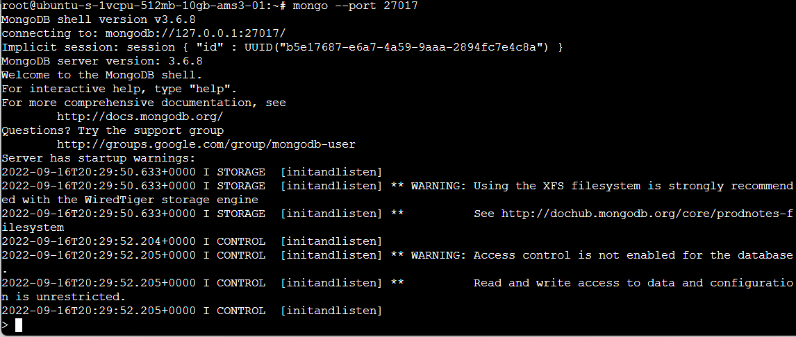
You will know you've entered the shell when the prompt is displayed: you will see >.
Enter
use admin
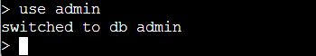
e) We will create an admin user. Decide on a name and a password.
Avoid reusing other usernames and passwords.
In the example below the user is john_dbadmin and the password 5t1ll5053cr3t!.
Do NOT use these examples for your database!
Now enter the user creation instruction. It will be made like this:
BUT you need to replace ADMIN_NAME and ADMIN_PASSWORD with those you decided above!
db.createUser({user: "ADMIN_NAME", pwd: "ADMIN_PASSWORD", roles: [ { role: "userAdminAnyDatabase", db: "admin" }] })
Which gives for example:
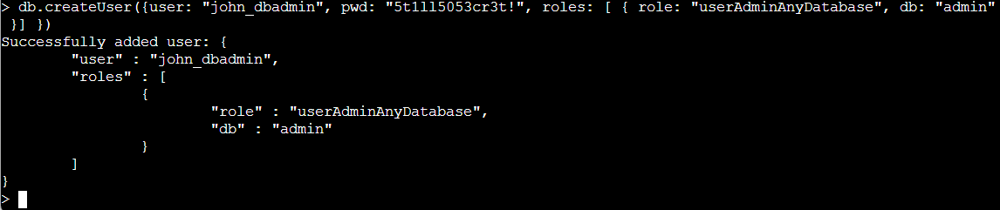
f) Exit the shell entering:
exit
Mongo will answer bye and you'll be back to Ubuntu's command prompt.
g) Edit your Mongo configuration typing:
sudo nano /etc/mongodb.conf
Nano text editor will open. Yes, that's the easiest way to edit text files in Linux. Don't complain else I'll make you use vi.
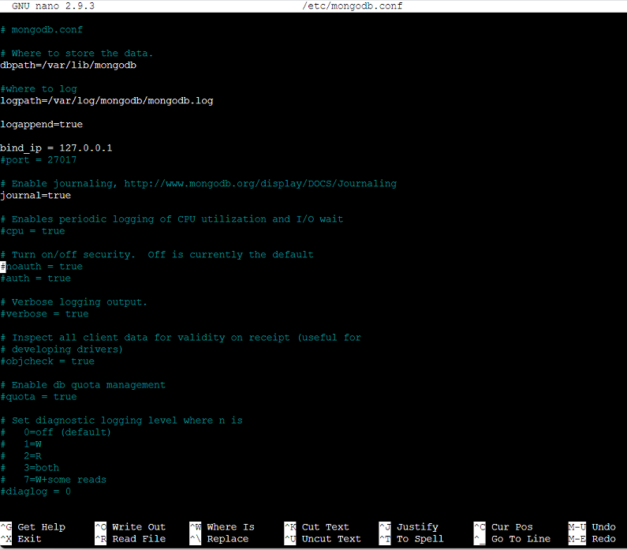
h) Using your keyboard arrows (no, your mouse doesn't work here), go down until you're on the line reading #auth = true and remove the #.
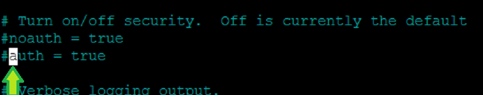
The line should now read:
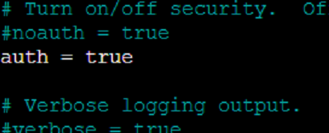
i) Save the modified file:
- Press
Ctrl-O(the letter O not zero) - Press
Enter - Press
Ctrl-X
Note: if you use a Mac the Ctrl key is ⌘
You can return to step g. above if you want to check it's been modified correctly.
Good. Now you know how to use Nano.
j) Restart Mongo with this command:
sudo service mongodb restart
Nothing special will display. You will return to the command prompt immediately.
You have installed the MongoDB application in your droplet.
Step 4 - Create a new database⌁
a) Login into Mongo as an admin typing this command:
BUT you need to replace ADMIN_NAME with your own database administrator name, the one you decided above in Step 3.e.
mongo -u ADMIN_NAME -p --authenticationDatabase admin
You will be asked to enter the password matching your admin user (still that one defined in Step 3.e.).
This is the example continued, don't use john_dbadmin in your case: use your own.
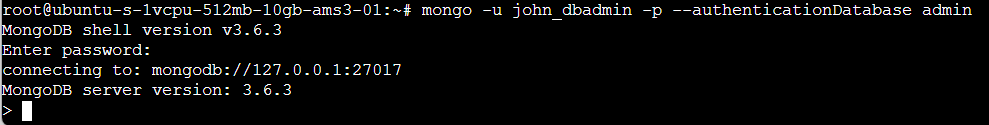
b) Now you need to create a database name.
Make it simple (letters), this is just the place your Nightscout data will be stored.
Type this command:
BUT you need to replace MONGO_NS_DB with your own database name.
use MONGO_NS_DB
In the example below the database name is NS-DB.
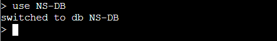
c) Then you need to create a database user. It's not the same than the Mongo user.
Invent a name (letters and numbers) and a password (letters and numbers, uppercase and lowercase).
Type this command:
BUT you need to replace MONGO_NS_USER with your database user name, MONGO_NS_PASSWORD with its matching password and MONGO_NS_DB with the database name you created above.
db.createUser({user: "MONGO_NS_USER", pwd: "MONGO_NS_PASSWORD", roles: [ { role: "readWrite", db: "MONGO_NS_DB" }]})
In the example below the database username is john_nightscout, the password is Nightscout19800416 and database still NS-DB.
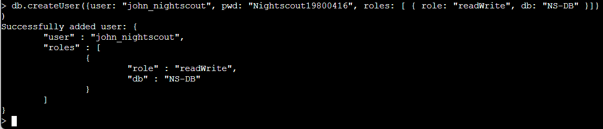
d) Check you can login into Mongo with this user typing this command:
BUT you need to replace MONGO_NS_USER with your own database administrator name, and replace MONGO_NS_DB with your own database name. The ones you decided above in Step 3.c.
mongo -u MONGO_NS_USER -p --authenticationDatabase MONGO_NS_DB
You will be asked to enter the password matching your user (the one defined in Step 3.c.).
This is the example continued, don't use john_nightscout: use your own.
e) Exit the shell entering:
exit
Mongo will answer bye and you'll be back to Ubuntu's command prompt.
You have created your Nightscout MongoDB database and its user.
Step 5 - Install Nightscout⌁
a) Create a new user.
You are now running Ubunto with highest privilege. Don't try to run nightscout as root user, it will not work.
Replace mainuser with a name of your choice, like your name, only lowercase letters.
sudo adduser mainuser
In the example below, the user name is john.
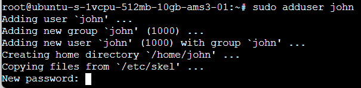
You need to invent a password for your new user.
Confirm it then just hit Enter for the following lines, when done key Y then Enter.
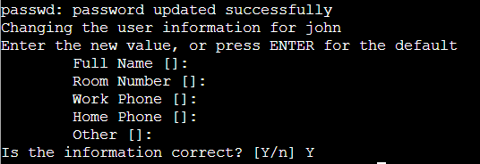
b) Make your user an administrator.
Type the following command:
Replace mainuser with your new user name.
sudo usermod -aG sudo mainuser
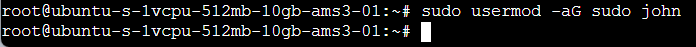
c) Login to the machine using the account we just created.
Type the following command:
Replace mainuser with your new user name.
ssh mainuser@IP-number